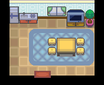
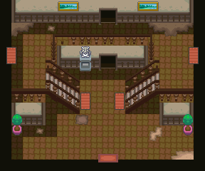

087 深夜电视异闻录
一句话目标：接受浅葱市委托人的请求，前往 40 号水路上方洋馆（不知名遗迹）调查那台一直关着的电视，敲开电视与里面的宝可梦对战后回来复命。
接取地点
- 浅葱市委托人所在建筑（地图 49:8 浅葱市，室内），(8,4) 的委托人（local_id 1）。
- 当前目录描述：调查 40 号路上方的洋馆中有关深夜电视的传闻。
准备条件
- 脚本入口先检查旗标 4246（主线进度点，具体剧情点未解释）。
- 委托人明确要求在午夜 12 点独自观看关着的电视；电视机前另有条件判定（special 161、special2(…,217)），具体含义未解释。
- 建议准备能应付 Lv20 对战的队伍。
操作步骤
- 到浅葱市委托人所在建筑，与她对话（8,4）。她讲述传闻：40 号路上方的洋馆里有一台一直关着的电视，午夜 12 点独自看那台关着的电视、盯着自己倒映在屏幕上的脸，就会看见命中注定的对象；但她说自己修炼不够不敢进洋馆，请你去调查。
- 答应后出现“接受任务:<深夜电视的秘密>”，旗标 6034 置位；她叮嘱“是要在午夜 12 点观看关着的电视哦”。
- 前往 40 号水路上方的洋馆：从 40 号水路（3:95） 进入内部水路 56:23，再上行经 56:17、56:18，到达 56:21 不知名遗迹。
- 在 56:21 的电视机前调查（地图上 (10,2)/(11,2) 两个调查点）。条件满足时电视里会映出人影/某只宝可梦，并问“敲几下电视机好像就会出来，要敲敲看吗？”，选择敲打；否则只会看到“好可疑的电视机……感觉在朝这里看……”。
- 敲打后与电视里的宝可梦（洛托姆 532，Lv20）战斗。随后剧情把你吸入电视，再问“感觉越来越困了……要闭上眼睛吗？”，闭眼后被传送离开。
- 回到浅葱市委托人处（重新进入 49:8）自动触发收尾：她惊讶你“从电视里出来”，随后当作玩笑收下，给报酬并完成。
交付检查
- 电视事件完成后回到浅葱市委托人所在建筑即自动结算（完成旗标 6102）。
- 收尾对白含“那个老爷爷也说了什么梦幻泡影之类的话……或许真的是一场梦吧”“所谓的深夜电视的传说……竟然是宝可梦的……”。
奖励
容易卡住的位置
- 委托人明确要求午夜 12 点观看关着的电视，其它时段可能无法触发电视事件（脚本另有条件判定，未解释）。
- 洋馆在 40 号水路方向，入口要经 40 号水路 → 56:23 → 56:17 → 56:18 → 56:21 层层深入，别在别处找。
- 电视事件一次性触发，完成后再去只有回味类对白。
来源与待补
- 包：
data/quest_packets/087.json；接取脚本0x08F5EDE3、0x08AFA649、0x08AC3D27、0x08AC4443，调查脚本0x08EC1A78、0x08EC1C2B、0x08AF49E9、0x08AFFE28，收尾地图脚本0x08D53000、0x08EC1F8C。 - 相关宝可梦：洛托姆；相关道具：TM78、经验糖果S。
- 未定位：电视事件触发所需的具体时间/条件（special 161、special2(…,217)）；current_description 说“40 号道路上方的洋馆”，实际入口在 40 号水路方向。
地点地图
共享RGB底图；点击可缩放定位。数字对应本页相关地点，不代表地图上全部事件。
浅葱市

1 深夜电视异闻录（8,4）
不知名遗迹

地图范围记录：当前资料没有精确人物／遭遇坐标。
40号水路

地图范围记录：当前资料没有精确人物／遭遇坐标。
不知名遗迹

地图范围记录：当前资料没有精确人物／遭遇坐标。
不知名遗迹

地图范围记录：当前资料没有精确人物／遭遇坐标。
40号水路

地图范围记录：当前资料没有精确人物／遭遇坐标。 底图有9个图块缺少原始数据。